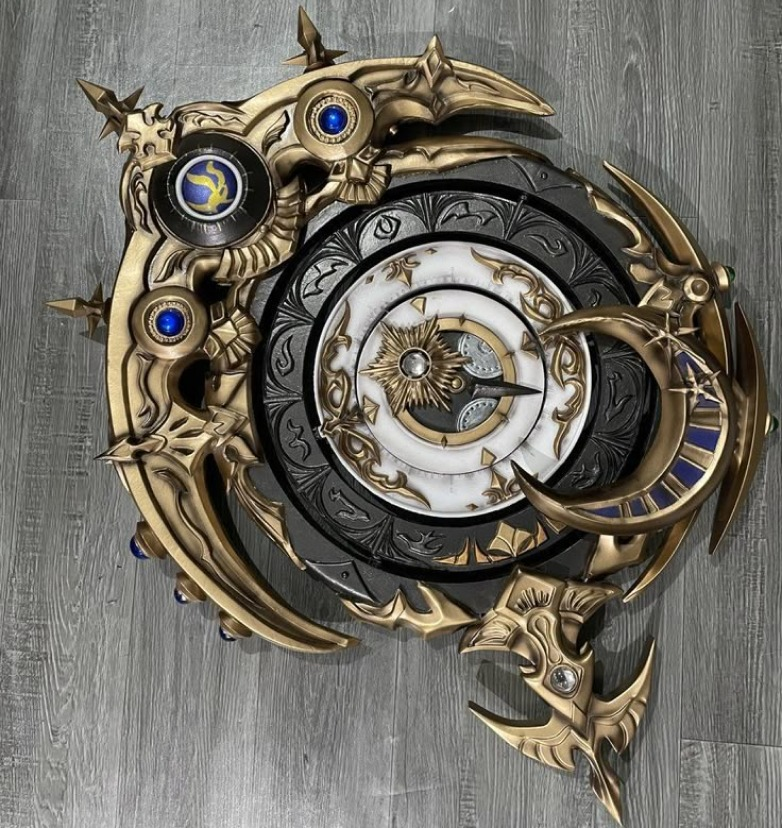

Артефакты древнегреческой мифологии: магические предметы между божественным и человеческим
В греческих мифах предметы никогда не были просто инструментами — они становились символами власти, проводниками судьбы и материальными воплощениями божественной воли. Эти артефакты, созданные богами, титанами или легендарными мастерами, формировали саму ткань мифологических сюжетов, определяя победы героев и падение тиранов. От волшебного оружия до бытовых предметов с невероятными свойствами — каждый артефакт отражал греческое понимание взаимодействия смертного и бессмертного миров.
Древняя Греция оставила богатое наследие в виде различных предметов и артефактов, которые отражают их выдающиеся достижения в науке, искусстве, архитектуре и технологии.
Греция стара, как этот мир. И сегодня люди знают лишь малую толику того, что представляла собой эта древняя культура, а учёные все еще делают потрясающие находки, которые раскрывают новые аспекты жизни Древней Греции. Уникальные произведения искусства, города, руины, интригующие редкие гробницы и странные скелеты, найденные археологами – всё это позволило узнать о древней цивилизации интереснейшие подробности.
Оружие богов и героев.
Целый пласт артефактов связан с воинской культурой и представлениями о справедливой силе. Молния Зевса, выкованная киклопами после освобождения из Тартара, была не просто оружием — она воплощала неотвратимость божественного наказания. Гомер в "Илиаде" описывает, как ее удар "обращает в пепел целые рощи и испепеляет землю на семь локтей вглубь". Не менее значимым было копье Ахилла, переданное ему отцом Пелеем — оно могло исцелять раны, которые наносило (как показано в мифе о Телефе). Особое место занимали стрелы Геракла, пропитанные ядом Лернейской гидры — даже царапина от них становилась смертельной (что в итоге погубило самого героя).
Интересна эволюция образа щита — от простого медного диска до сложного символа. Щит Ахилла, выкованный Гефестом по просьбе Фетиды, представлял собой микрокосм с изображением "двух городов" — воюющего и мирного, что отражало дуальность человеческого существования. Афина носила эгиду — не просто щит с головой Медузы, а магический барьер, обращавший врагов в камень одним видом. В более поздних интерпретациях (особенно у римлян) эгида стала символом божественного покровительства — ее образ использовали для "защиты" целых городов.
Магические предметы повседневности.
Греки верили, что чудесные свойства могут заключаться и в обыденных вещах. Ящик Пандоры, созданный Гефестом по велению Зевса, внешне напоминал простой глиняный сосуд, но содержал все беды мира — от болезней до смерти. Любопытно, что в оригинальном мифе у Гесиода это был не ящик, а пифос (большая амфора для хранения зерна), что подчеркивало связь с домашним очагом. Не менее символичен пояс Афродиты (кестос), который богиня одалживала Гере для соблазнения Зевса — в нем заключалась "любовная сила, влечение и сладкие речи".
Особую категорию составляли музыкальные инструменты. Лира Орфея, подаренная Аполлоном, могла укрощать диких зверей, останавливать реки и смягчать сердца богов подземного мира. Археологические находки (например, фрески в Песте) показывают, что такие лиры действительно создавались — их украшали символами солнца, что подчеркивало связь с культом Аполлона. Свирель Пана (сиринкс), сделанная из тростника, в которую превратилась нимфа, стала символом неразделенной любви и творческого вдохновения.
Артефакты-проводники.
Некоторые предметы служили "ключами" между мирами. Шлем-невидимка Аида (иногда называемый "кина"), выкованный циклопами, использовался не только владыкой подземного мира, но и Персеем в битве с Медузой — он символизировал тайное знание, недоступное простым смертным. Крылья Икара, скрепленные воском, стали аллегорией человеческой дерзости — примечательно, что в ранних версиях мифа это были настоящие перья, добытые из гнезда гигантских птиц, а не искусственная конструкция.
Особое место занимали священные камни. Дельфийский омфал ("пуп земли"), упавший с неба по легенде, был не просто метеоритом — его оплетали две золотые змеи, а жрецы "слышали" через него голос Геи. В Додоне аналогичную функцию выполнял дуб Зевса, шелест листьев которого толковали как пророчества. Даже обычные камни могли становиться артефактами — например, камень Сатурна, который Рея подсунула Кроносу вместо младенца Зевса, позже хранился в Дельфах, поливаемый маслом и украшенный шерстяными лентами.
Технологические чудеса.
Греки приписывали божественное происхождение и сложным механизмам. Талос — бронзовый великан с Крита, созданный Гефестом, охранял остров, обходя его трижды в день. В его описании у Аполлония Родосского явно прослеживаются черты древнего робота: единственная "жила" с жидким металлом вместо крови, винт на пятне для "подзарядки". Не менее удивительны автоматы Гефеста — золотые служанки с разумом, способные поддерживать беседу (упомянуты в "Илиаде"). Историки видят в этих описаниях отголоски реальных механизмов Александрийской эпохи.
Символические артефакты власти.
Царские регалии часто наделялись сверхъестественными свойствами. Скипетр Агамемнона, по Гомеру, был выкован самим Гефестом для Зевса, затем передан Гермесом Пелию, а от него — Атрею. Это не просто знак власти, а "живой" предмет, способный даровать мудрость — в "Илиаде" он чудесным образом расцветает, подтверждая право Агамемнона на главенство. Ожерелье Гармонии, подаренное на свадьбу Кадму и Гармонии, приносило несчастье всем владельцам — от сына Полиника до Алкмеона, пока не было посвящено в Дельфы.
Ритуальные предметы как артефакты.
Даже в культовой практике обычные вещи превращались в магические. Фаллосы Диониса, носимые во время мистерий, считались проводниками плодородия. Керносы — сосуды с множеством отделений для подношений — символизировали единство космоса. В Элевсинских мистериях использовали ликнон (корзину для зерна) как символ возрождения — его встряхивали под специальные песнопения.
Наследие в материальной культуре.
Многие артефакты перешли в историческую эпоху как священные реликвии:
• Щит Афины Паллады хранился в Эрехтейоне;
• Меч Александра Македонского якобы был найден Юлием Цезарем;
• Якорь аргонавтов демонстрировали в Кизике еще во II в. н.э.
Психологи видят в этих предметах архетипические образы:
• Меч — мужское начало и активная сила;
• Чаша (как у Диониса) — женское и принимающее;
• Зеркало (Афродиты) — самопознание и иллюзию.
Эти артефакты не просто двигали сюжеты — они формировали символический язык, через который греки осмысляли мир. От философских аллегорий Платона до современных фэнтези-вселенных, этот набор "волшебных предметов" продолжает влиять на культуру, напоминая, что даже в обыденном может скрываться божественное.